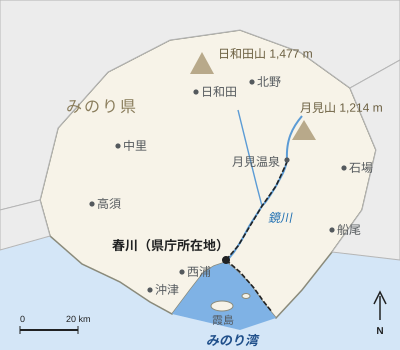

みのり湾
| みのり湾 みのりわん | |
|---|---|
 朝のみのり湾に並ぶカキ筏 | |
 みのり県内のみのり湾 | |
| 地理 | |
| 所在地 | 日本 みのり県 |
| 主な流入河川 | 鏡川 |
| 面積 | 286 km² |
| 最大水深 | 38 m |
| 平均水深 | 17 m |
| 湾口 | 幅7.2 km（沖津岬–内浦半島） |
| 島 | 霞島、鷺島 |
| 沿岸の都市 | 春川市、沖津市 |
| 利用 | |
| カキ筏 | 約1,920台 |
| カキ生産量 | むき身6,300 t（2023年） |
| 港 | みのり港、魚町漁港 |

みのり湾（みのりわん）は、みのり県の沿岸にある湾。湾奥には鏡川が注ぎ、その河口に県庁所在地の春川市がある。面積は286 km²、平均水深は17 m、最大水深は38 mで、沖津岬と内浦半島の間の幅7.2 kmの湾口で外海に通じる[1]。波が穏やかで、川から栄養分が供給されるため県内有数の漁場となっており、カキとタイの養殖で知られる。
地理[編集]

みのり湾は河谷が沈水してできた溺れ谷で、湾奥は浅く、湾口に向かって深くなる。流入する川の中では、流域面積1,620 km²の鏡川が際立って大きい。春川市中心部からみのり港に至る北岸は市街地化が進み、魚町の漁港、埋立地の造船所、海辺のみのり公園と水族館、桜浜の海水浴場が並ぶ。丘陵性の内浦半島が春川市中心部の沖の内湾を囲んでおり、斜面の段々畑ではユズが栽培されている。半島にある縄文時代の内浦貝塚は、約5,000年前からこの海岸で貝が採られていたことを示している。湾口の対岸は沖津市の沖津岬である。
島[編集]
| 島 | 面積 | 人口 | 備考 |
|---|---|---|---|
| 霞島 | 5.8 km² | 1,240人 | 春川市に属する。みのり港からフェリーで35分 |
| 鷺島 | 0.4 km² | 0人 | アオサギの集団営巣地、鳥獣保護区 |
大きいほうの霞島（かすみじま）は春川市に属し、漁業、タイの養殖、柑橘栽培が主な産業である。島名の「霞」は、市街地から島が見えなくなるほどの朝もやにちなむ。みのり港からフェリーで35分である。小さな鷺島（さぎしま）は樹林に覆われた無人島で、県鳥アオサギの集団営巣地があるため県の鳥獣保護区に指定されており、3月から7月の繁殖期には上陸が禁止されている[要出典]。
漁業[編集]

みのり湾のカキ養殖は1878年に始まった。現在は内湾と内浦半島の沖に約1,920台の筏が浮かび、2023年の生産量はむき身で6,300トンであった[注 1]。出荷期は11月から3月までで、「みのり牡蠣鍋」などの郷土料理に用いられる[1]。マダイは主に霞島の周辺で網いけすによって養殖され、春川の代表的な郷土料理である鯛柚子めしの材料となる。水揚げは魚町で行われ、1956年には同地に中央卸売市場が開設された。
2017年の夏には内湾一帯に赤潮が広がって養殖のマダイやカキが大量死し、漁業被害は約12億円に達した。湾で記録された赤潮被害としては過去最悪である[2]。以後、県は毎年6月から9月まで週1回の水質監視を行っている。
埋め立て[編集]
魚町と汐見の一部は江戸時代に湾を埋め立ててできた土地である。最大の埋め立ては1961年から1966年にかけて行われ、北岸の2.4 km²がみのり重工業春川造船所の用地として造成された。優良な漁場の一部が失われることからカキ漁業者は工事に反対し、1965年に提起された訴訟は1968年に3億8,000万円の補償で和解した。この事業は春川市長佐伯哲夫が推進したもので、その業績の中で最も評価が分かれている[3]。
交通・観光[編集]
春川鉄道の湾岸線は、春川中央駅からみのり港まで北岸に沿って16.2 kmを走り、みのり港からは霞島へのフェリーが出ている。1997年にみのり公園駅近くの海浜公園に開館したみのり湾水族館の2024年度の入館者数は46万6,000人であった。春川灯籠まつりの日曜日の夜には、湾上に4,000発の花火が打ち上げられる。
関連項目[編集]
脚注[編集]
注釈[編集]
- ^ 日本のカキの生産量は通常むき身の重量で示され、殻付きの重量のおよそ5分の1にあたる。